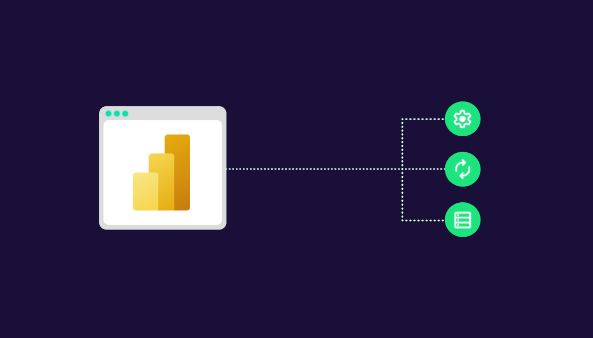
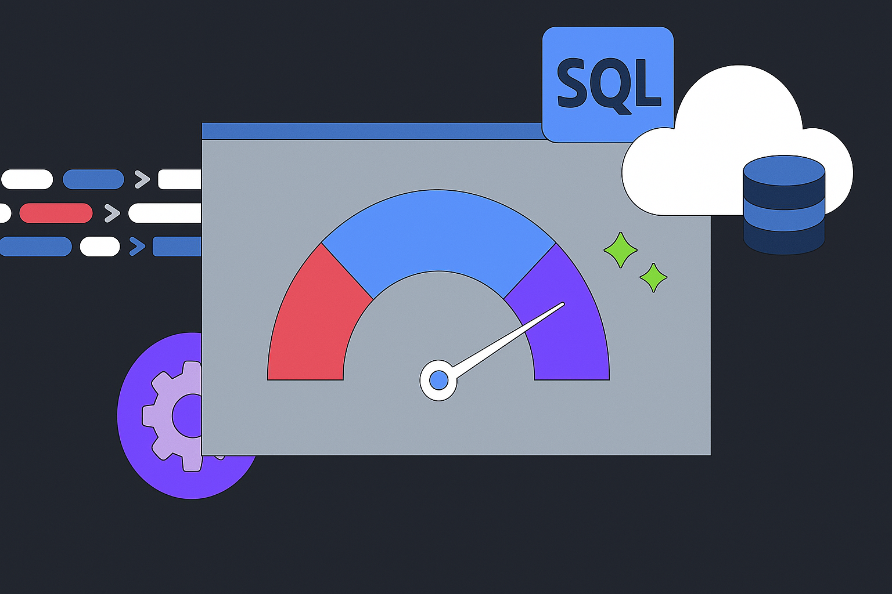
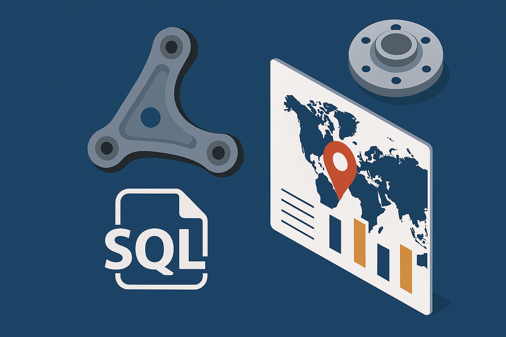
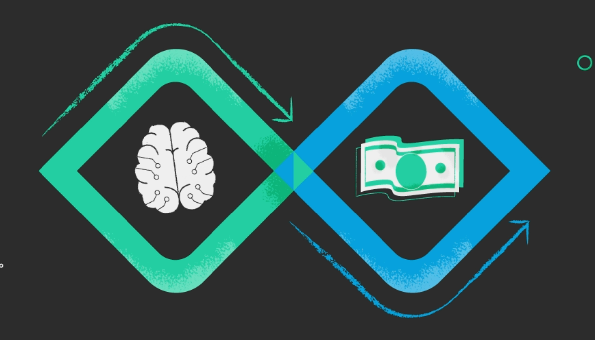
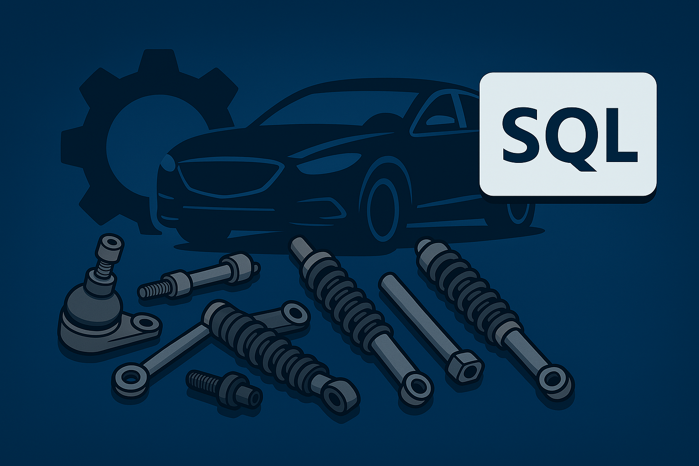

ACES/PIES Catalog Management System
An automated data pipeline that transforms raw industry and company data into a structured aftermarket catalog with fitment and cross-reference intelligence.
Data analyst · Industrial engineer
I build analytical systems that make complex supply chains, pricing, inventory, and forecasting easier to understand—and act on.
Selected work
A selection of end-to-end analytics projects spanning automotive data, commercial intelligence, and supply-chain operations.
An automated data pipeline that transforms raw industry and company data into a structured aftermarket catalog with fitment and cross-reference intelligence.

A governed analytics layer unifying sales, procurement, and finance data for consistent reporting and faster cross-functional decisions.
ARIMA and Prophet forecasting across 12,000+ chassis SKUs to support procurement and inventory planning.

Dynamic landed-cost analysis and vendor comparison logic built for scalable, cost-conscious purchasing decisions.

Market-demand comparison that surfaces sales gaps, catalog coverage opportunities, and regional growth potential.

Regression and competitor benchmarking applied across thousands of SKUs to improve pricing while protecting margin.
Accounting-to-WMS discrepancy analysis with quantified financial impact.
Customer inventory loss modeling connected to company sales performance.

Structured part-number relationships for cleaner RFQs and catalog maintenance.
What I bring
From raw operational data to a decision-ready model, I focus on the full chain—not just the final chart.
SQL systems, data transformation, semantic models, and durable analytical foundations.
Power BI, DAX, and business logic that translate metrics into a shared operating language.
Python models that make demand, cost, pricing, and purchasing decisions more forward-looking.
Industrial engineering thinking grounded in supply chain, automotive aftermarket, and finance.
About
My background in industrial engineering shapes how I approach analytics: understand the operation, structure the problem, then build the clearest possible path from data to action.
I work across SQL, Power BI, Python, DAX, M, and Access—often where supply chain, pricing, inventory, and commercial decisions overlap.